Geometry
Where can the robot move?
Align shallow visual features with a frozen VGGT teacher, preserving geometric structure through feature direction and magnitude supervision.
Robot policies inherit rich visual and semantic knowledge. But what looks informative is not always what matters for action. We call this mismatch the action-sufficiency gap.
GIFT guides intermediate features to preserve three recurring structures: geometry for motion feasibility, affordance for object-centric interaction, and goals for instruction-conditioned spatial grounding. The same supervision principle transfers across a VLA and two world-action models.
Vision-language pre-training and predictive world modeling provide robot policies with rich semantic and dynamic visual features, but their native action and visual-prediction objectives may omit critical physical and task structure while retaining control-irrelevant visual redundancy, leading to suboptimal performance. We call this mismatch between visual richness and control utility the action-sufficiency gap. We investigate whether this gap can be bridged by guiding intermediate features to preserve three recurring types of control-relevant structure in robotic manipulation: geometry governing motion feasibility, affordance encoding instruction-relevant entities and object-centric end-effector configurations, and goals grounding instructions in task-relevant action regions. To this end, we present GIFT (Guided Intermediate Feature Training), an architecture-flexible framework for learning intermediate features that translates these structures into training-time constraints through geometry alignment, affordance prediction, and goal-region reconstruction. We instantiate GIFT in a semantics-centered Vision-Language-Action (VLA) policy, a direct-action World-Action Model (WAM), and an inverse-dynamics WAM, and compare injection and no-injection designs while retaining each model's action formulation. Under zero-shot transfer to LIBERO-Plus, GIFT-VLA, GIFT-WAM-Fast, and GIFT-WAM-IDM outperform StarVLA-OFT, Fast-WAM, and Fast-WAM-IDM by 4.6, 12.6, and 5.2 percentage points, reaching 79.6%, 72.6%, and 87.8%, respectively, across seven distribution shifts. On RoboCasa, the three GIFT variants reach 61.4%, 83.6%, and 82.3%, outperforming their counterparts by 12.6, 9.0, and 8.4 points; on articulated-object tasks, GIFT-WAM-Fast and GIFT-WAM-IDM outperform Fast-WAM and Fast-WAM-IDM by 21.3 and 24.6 points, respectively. Together, these results establish learning functionally structured intermediate features as a reusable principle across model-specific action formulations, with especially large gains on articulated-object tasks and high-precision real-world manipulation under unseen visual and spatial perturbations. Ablation studies further show that the no-injection variants perform better, indicating that GIFT internalizes task-relevant structure into intermediate features without relying on auxiliary conditioning.
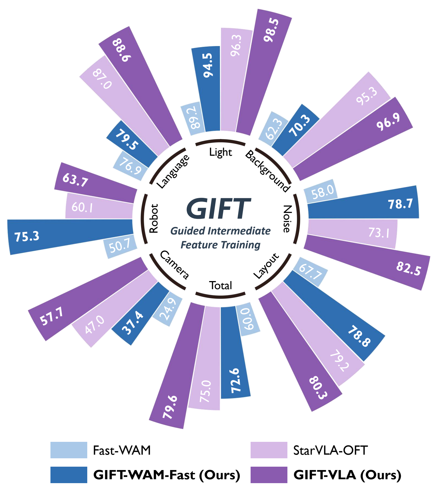
Complementary training objectives teach intermediate visual tokens to retain the physical and task structure needed for manipulation.
Where can the robot move?
Align shallow visual features with a frozen VGGT teacher, preserving geometric structure through feature direction and magnitude supervision.
What to interact with, and how?
Predict instruction-relevant entity roles, object-centric end-effector poses, and closure states with a structured interaction representation.
Which regions matter for the task?
Ground language instructions in task-relevant image regions through goal-region prediction, complementing object-centric interaction guidance.
Semantics-centered features with direct action prediction.
Direct action diffusion from cached current-frame world-model features.
Future-conditioned inverse dynamics: imagine a trajectory, then derive actions.
The default no-injection design shapes shared features through auxiliary losses. The geometry teacher and auxiliary prediction heads do not need to run at deployment.
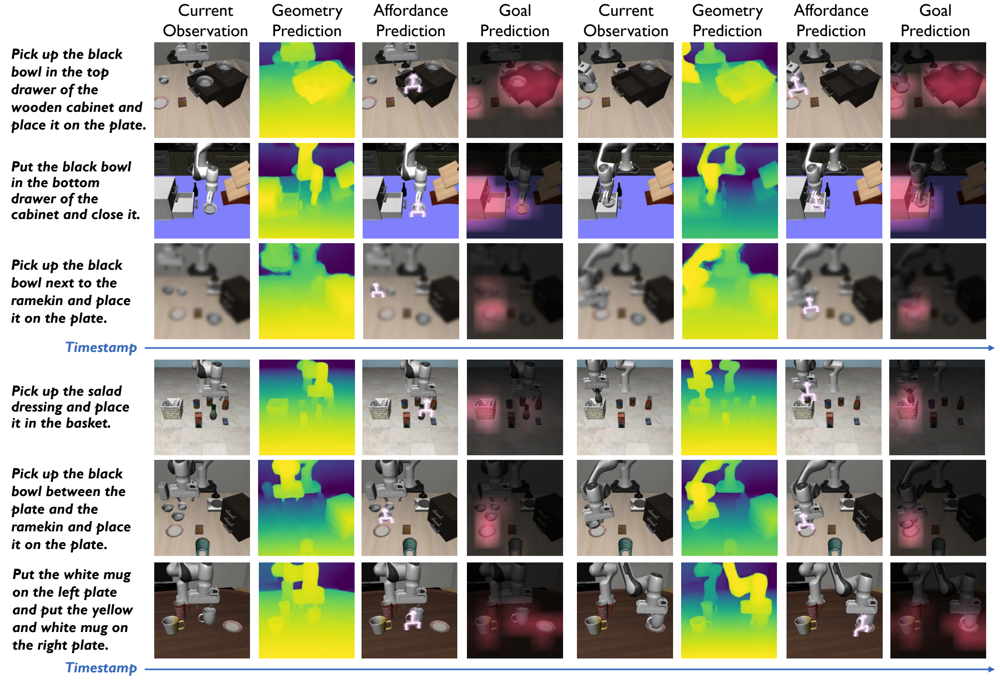
Compare each GIFT variant with its corresponding baseline. Gains are reported in percentage points (pp); scores are success rates (%).
Trained on LIBERO. Evaluated across seven distribution shifts.
Source: Table 2. All methods are evaluated without fine-tuning on LIBERO-Plus. Overall improvements do not imply improvements on every individual perturbation.
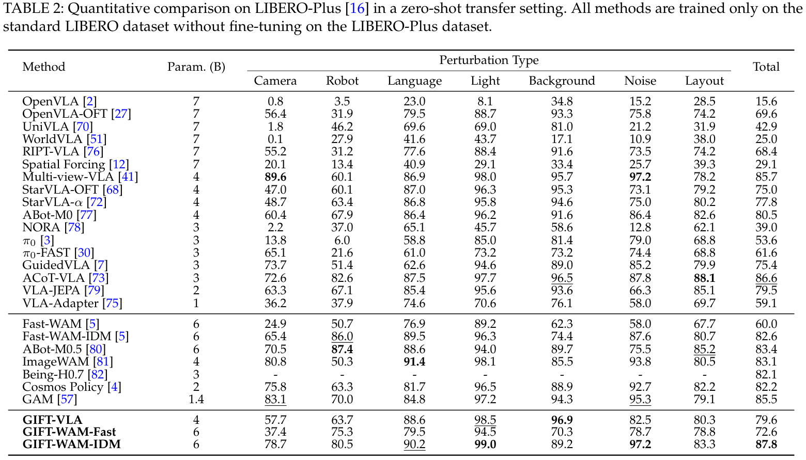
Original Table 2 from the paper. Scroll horizontally on smaller screens.
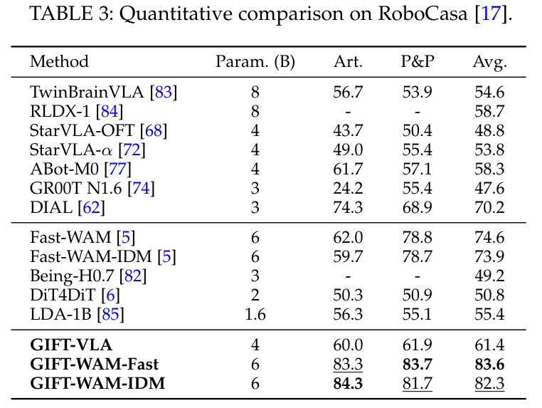
Original Table 3. Art. denotes articulated-object tasks; P&P denotes pick-and-place.
Four tasks on two platforms probe instruction following, articulated-object interaction, and precise bimanual insertion. Each task uses 10 evaluation trials per method.
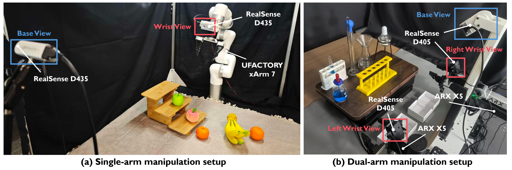
GIFT-WAM-IDM reaches 87.5% overall success in the original settings and 67.5% across the four tested perturbation conditions, compared with 52.5% and 15.0% for Fast-WAM-IDM.
| Method | Original | Perturbed |
|---|---|---|
| StarVLA-OFT | 35.0% | 5.0% |
| GIFT-VLA | 57.5% | 27.5% |
| Fast-WAM-IDM | 52.5% | 15.0% |
| GIFT-WAM-IDM | 87.5% | 67.5% |
Original: 40 trials over Tasks 1–4. Perturbed: 40 trials over two levels each for Tasks 2 and 4. Tables 8–9.
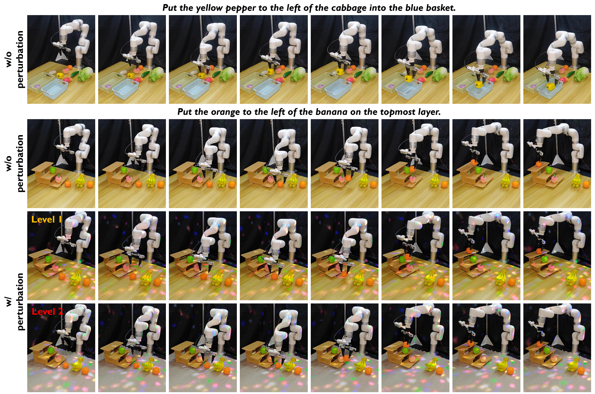
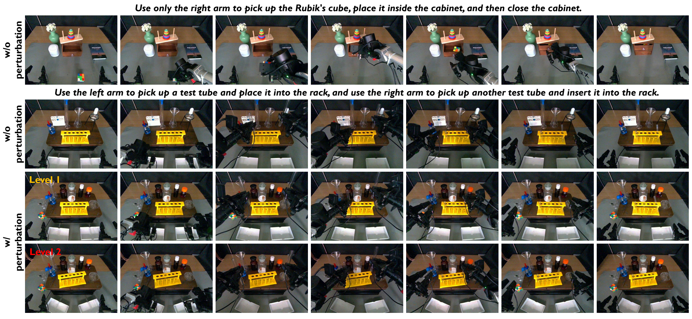
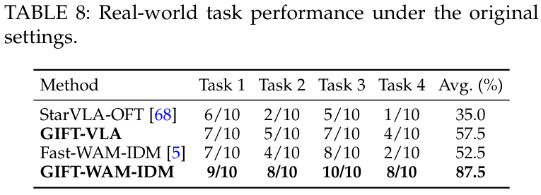
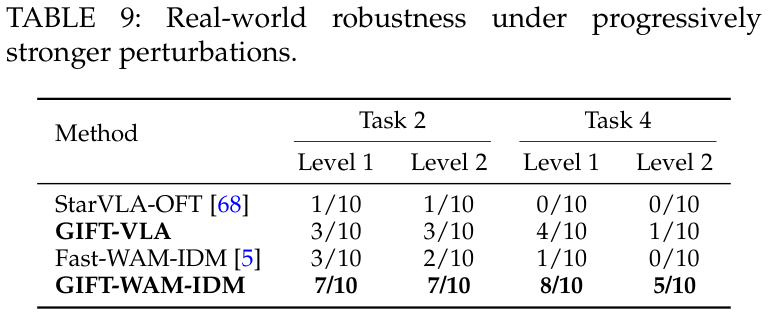
Ablations examine each supervision signal, auxiliary feature injection, and the task-relevant information encoded by the policy.
All three no-injection variants achieve higher reported overall success than their injection counterparts on both LIBERO-Plus and RoboCasa. The result supports internalizing task structure in shared features.
Each individual guidance signal improves overall LIBERO-Plus success over its named baseline. Combining all three gives the highest overall success in each ablation group.
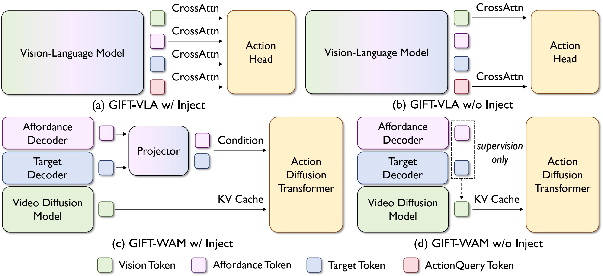
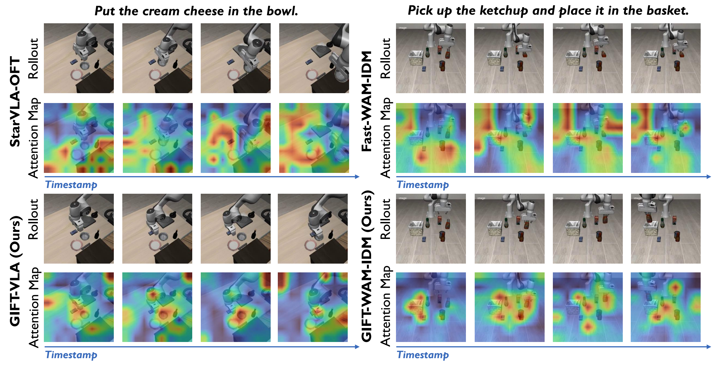
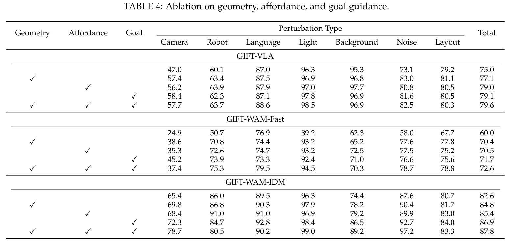
Table 4. Joint supervision yields the best overall success in each model's ablation group.
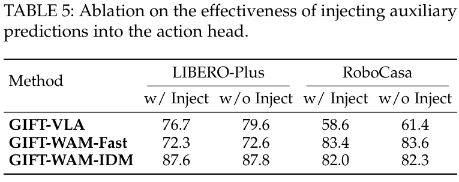
Table 5. No-injection variants are the default GIFT design.
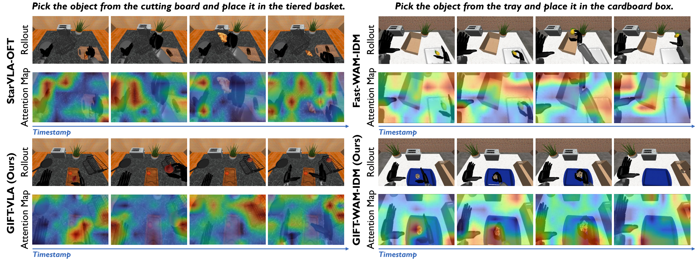
Qualitative attention comparisons on RoboCasa.
Structured guidance remains imperfect. The paper documents failure cases in geometry, affordance, and goal prediction. Overall gains vary with the policy and perturbation; intermediate supervision does not guarantee correct action in every scene.
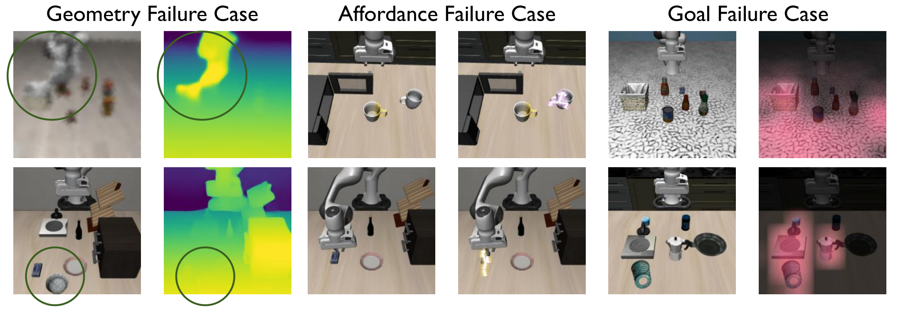
BibTeX forthcoming.